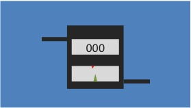
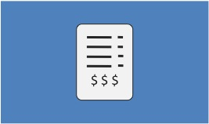

URS of WA LLC provides billing services for all utilities as well as meter installation and service. Submetering equipment is installed by URS of WA LLC in each unit, accurately measuring each resident's consumption.
We have onsite collection units that accurately record resident consumption. That data is then relayed to URS of WA LLC via our radio-frequency transmitters.

URS of WA LLC processes resident consumption data, creates utility statements, and bills consumers. For non-submetered properties, additional billing methods are available.
